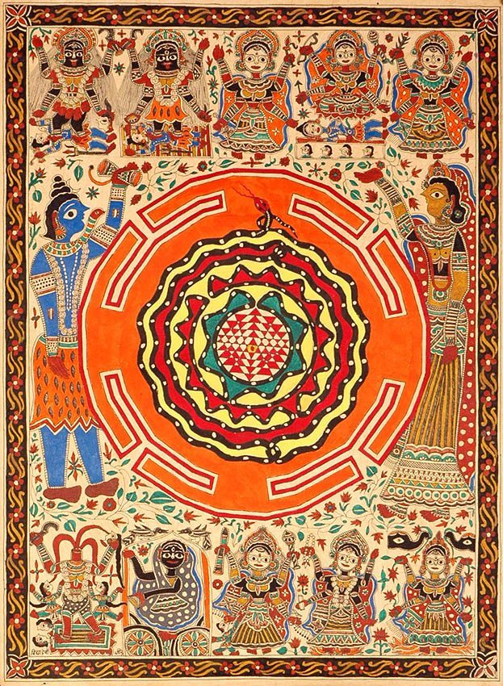

Home / Living Traditions / South Asia
Playable heritage gameMadhubani art
Also known as ['Mithila art']
Madhubani, or Mithila, painting is a folk art of northern Bihar in India and the neighbouring plains of Nepal. Bold ink outlines, double lines and flat fields of colour fill the whole picture, with fish, birds, leaves and flowers set in pairs and framed by borders.

How to play
- The framed picture shows the finished piece to copy: a lotus or four fish, set in a leaf-and-flower frame.
- Choose the ink, then press and drag along the lit lines: first the two-line frame, then the double outlines of the petals or fish. A slow, steady hand lays a fat line; dip again when it runs dry.
- Fill the bands with hatching and dots where the picture shows them. Mirror paints the matching half for you.
- Choose a colour and tap each shape to fill it with the colour shown in the picture.
Rules at a glance
- There are four steps: the frame, the double-line outlines, the hatched and dotted bands, and the colour. Each step is scored on its own and the scores are averaged.
- Ink score: how much of every guide line is covered by ink in the right place; stray ink outside the guides counts against you.
- Colour score: how much of each shape holds its own colour. A colour tapped into the wrong shape does not count.
- The picture is mirror-symmetric, so both halves should be painted alike; uneven halves lower the score a little.
- Undo takes back your last stroke or fill. Doing nothing earns no stars.
About the tradition
Madhubani painting comes from the Mithila region of Bihar, India, and the neighbouring plains of Nepal. Women painted house walls and later paper and cloth with colours made from plants, soot and earth, and the art is kept alive today by families and cooperatives.
Origins
A living tradition passed from person to person; it is not tied to a single dated origin. It belongs to the cultural world of South Asia.
Credits
- Photo: toyin adepoju, CC BY-SA 3.0, source on Wikimedia Commons
- Text: CC BY-SA 4.0, World Heritage Games.
Sources

Get the app
Madhubani art is one of 8 folk paintings in the Folk Painting of the World app for Android. Live on Google Play. One app, many traditions, no account needed.
More games to play

Pakistani truck art
Pakistan +1 · Crafts and makingPlay preview · in the Paper & Paint of the World app


Lippan kaam mud-and-mirror relief
India +1 · Crafts and makingPlay preview · in the Paper & Paint of the World app
Mehndi henna pattern drawing
India +1 · Crafts and makingPlay preview · in the Paper & Paint of the World app
Kashmiri papier-mache painting
India · Crafts and makingPlay preview · in the Folk Painting of the World app
More from India


Bansuri bamboo flute
India +1 · Musical instrumentsPlay preview · in the Music & Dance of the World app

Blacksmith's Forge
United Kingdom +4 · Crafts and makingPlay preview · in the Woodcraft & Metal of the World app